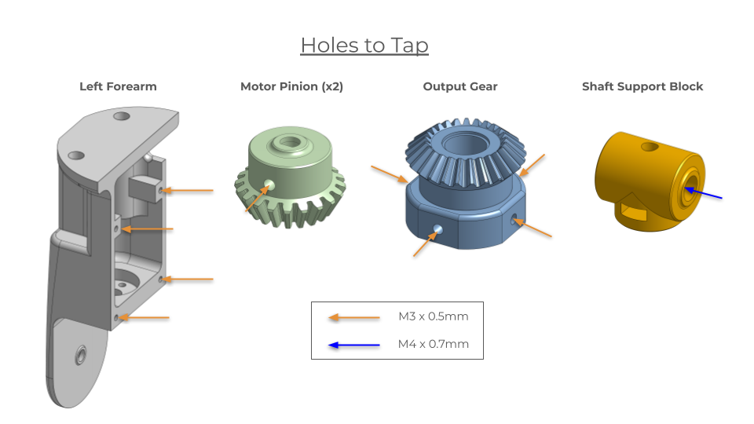

The above links to a repository containing the code used for the user studies conducted in this project, which uses MuJoCo and the robosuite simulation framework. This includes models of the end-effectors tested, simulation environments corresponding to the tasks, and functionality to record success and completion time. It also includes the teleoperation code, which requires the oculus_reader library, mapping user input to robot action.
Operation in constrained and cluttered spaces poses a challenge for robotic manipulators, in part due to their bulky link geometry and kinematic limitations in comparison to human hands and arms. To address these limitations, we introduce SLIM, a custom end-effector consisting of an ambidextrous hand and an integrated 2-DoF wrist. With an opposing thumb that tucks alongside the palm, and fingers that bend in both directions, the hand is shaped like an articulated paddle for reaching through gaps and maneuvering in clutter. Series elastic actuation decouples finger inertia from motor inertia, enabling use of small geared motors for forceful grasps while maintaining a low effective end-point mass to reduce impact forces. The thumb is mounted on a prismatic axis that adjusts grasp width for large or small objects. We illustrate some advantages of the design over conventional solutions with a computed increase in dexterous workspace and decreases in end-point mass and swept volume when reorienting objects. In tests aimed at training by demonstration, users provided with a dynamic simulation of SLIM completed tasks in cluttered environments faster and with higher success rates than with a conventional gripper, even when equipped with a supplemental wrist.
SLIM's differential wrist is cheaply and easily reproducable with 3D printed parts and off-the-shelf components.
Below, we include a bill of materials and simple assembly instructions.
An Onshape file containing ready-to-print or modify parts can be found here.
1. 3D Print Custom Components
2. Tap Holes in 3D Printed Parts: see image below for reference.

3. Solder Encoders to Motors: see link in BOM for instructions.
4. Mount Motors to Forearm Pieces: using M2.5 screws.
5. Press Bearings into Side Gears and Output Gear
6. Insert Set Screws into Motor Pinions and Attach to Motor Shafts
7. Insert M4 Nut into Shaft Support Block
8. Assemble Gears: Place each Side Gear in correct position, insert shoulder bolt, and faster to Shaft Support Holder. Place Output Gear in correct position and fasten to Shaft Support Holder with shoulder bolt, adding shims between the head of the shoulder bolt and the ball bearing.
9. Attach Hand of Choice: The Output Gear has 4 tapped M3 x 0.5mm holes for mounting a hand.
10. Attach Forearm to Robot Arm:The Forearm contains mounting holes for M6 screws and is compatible with most standard robot arms, including UR series, Franka, and Flexiv.